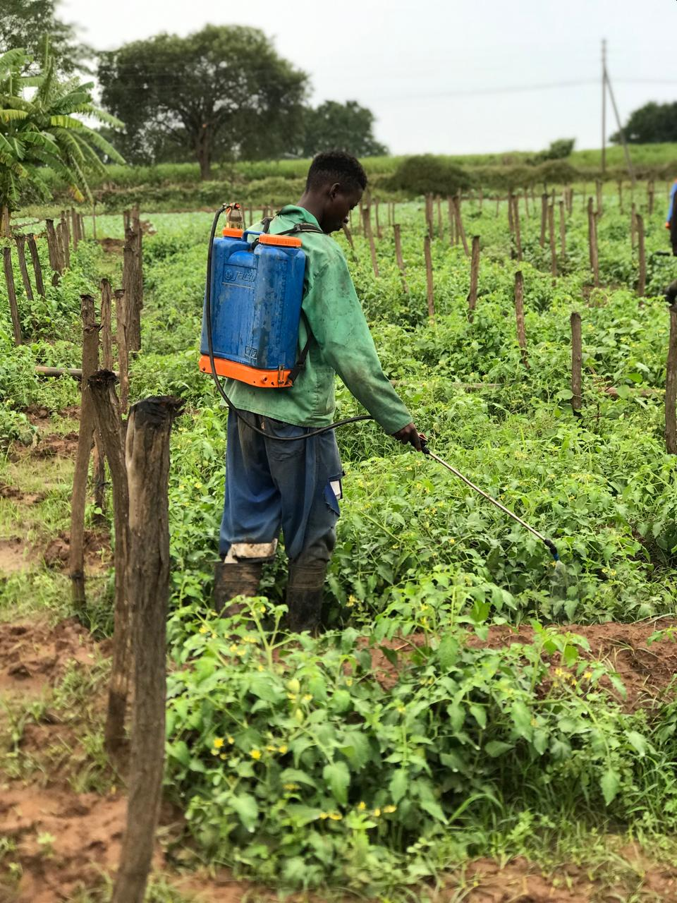
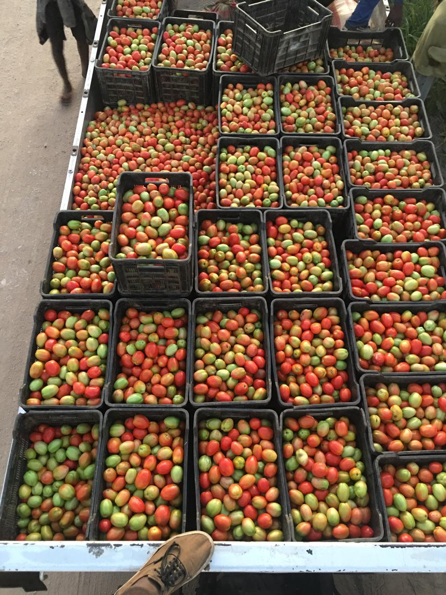
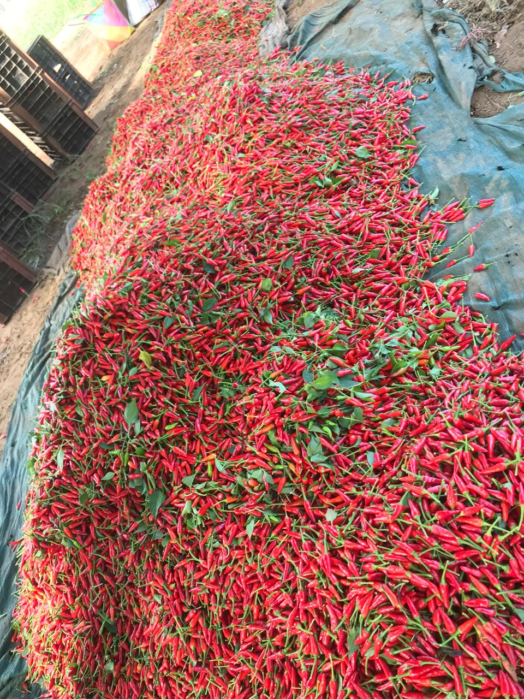
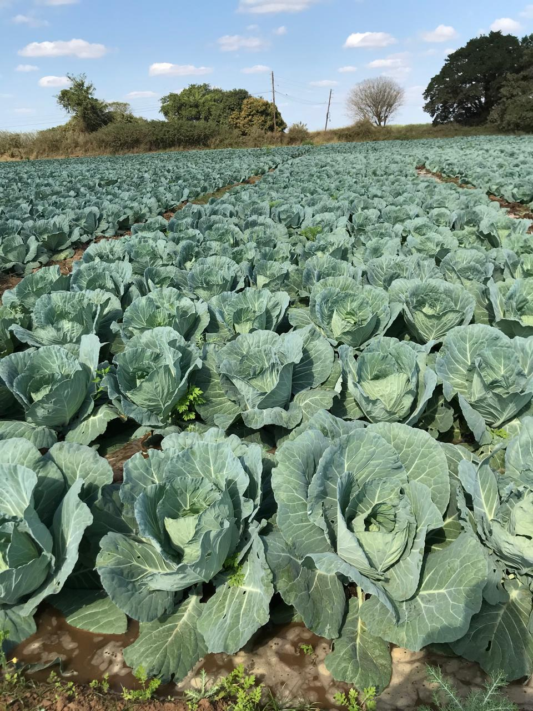
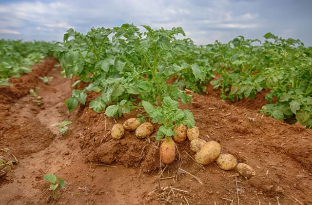

Os Nossos Produtos
Produtos Agrícolas e Carne Bovina
Conheça Paulo Antônio Macamo e a MacamosFarms
Paulo Antônio Macamo, residente em Mawandha 1, próximo à Escola Secundária, é o fundador da MacamosFarms, uma fazenda localizada na localidade de Chichuco, povoado de Maholele, no distrito de Magude. Sua propriedade, situada a 15 km da vila de Magude, destaca-se pela produção em grandes dimensões de repolho, tomate, pimento, batata Reno e piripiri. Além disso, Paulo cultiva couve e cebola em menores quantidades, mantendo sempre um padrão de excelência e frescura em seus produtos.

A MacamosFarms é conhecida como uma referência de inovação e excelência no setor agrícola de Magude e contribui significativamente para o desenvolvimento econômico da região. A visão empreendedora de Paulo não se limita ao cultivo; ele trabalha com foco em crescimento sustentável e está comprometido em atender à crescente demanda por produtos agrícolas de alta qualidade, tanto para o mercado local quanto para o internacional. Este compromisso faz com que ele se destaque como uma fonte de inspiração tanto como empresário quanto agricultor.

Produtos Do senhor Macamo
Tomates
Na MacamosFarms, os tomates são uma verdadeira paixão para Paulo, e seu cuidado na produção reflete-se nos resultados. Com uma colheita diária que ultrapassa 50 tomates, a fazenda de Paulo é um ponto de referência na produção desse fruto essencial para a culinária local e nacional. Os tomates da MacamosFarms são conhecidos por seu sabor intenso e textura firme, características que resultam de técnicas de cultivo cuidadosas e da escolha de sementes de qualidade. Eles possuem uma cor vermelha vibrante, são suculentos e oferecem o equilíbrio perfeito entre acidez e doçura, sendo ideais tanto para consumo fresco quanto para preparo em molhos e saladas. A produção em grande escala de tomates permite que Paulo mantenha um fornecimento constante para o mercado, atendendo às necessidades de consumidores e comerciantes com um produto de frescura inigualável.

Piripiri
O piripiri é outra cultura de destaque na MacamosFarms, sendo cultivado em grandes quantidades. Muito apreciado na culinária moçambicana, o piripiri de Paulo é famoso pela sua pungência e qualidade, garantindo um sabor autêntico e intenso. O piripiri é conhecido por seu uso em molhos e condimentos que agregam picância e realçam o sabor dos pratos locais. Paulo dedica-se a selecionar variedades de piripiri que não apenas proporcionam um sabor picante, mas também oferecem uma robustez natural, o que torna o produto ideal para o mercado. A grande produção de piripiri permite que a MacamosFarms atenda a uma demanda crescente por esse ingrediente, e a qualidade do produto tornou-se um dos atrativos da fazenda.
Com técnicas de cultivo cuidadosas, Paulo garante que cada pimenta colhida esteja em perfeito estado, pronta para ser comercializada em mercados e feiras de Magude e além.

Repolho
A produção de repolho é uma das maiores da MacamosFarms, com uma área de cultivo que se estende por cinco hectares. Esta vasta plantação permite que Paulo produza repolhos em grande quantidade, atendendo às necessidades de diversas comunidades e estabelecimentos locais que dependem desse vegetal rico em nutrientes e amplamente utilizado na culinária. Os repolhos cultivados na fazenda são conhecidos pela sua frescura, tamanho e textura crocante, características que são mantidas graças ao manejo cuidadoso e ao solo fértil da região de Magude.
A escolha de Paulo em dedicar uma área tão extensa ao repolho demonstra a importância desse produto tanto para a fazenda quanto para os consumidores, que têm acesso a repolhos de excelente qualidade e colhidos no auge da frescura. O repolho é um vegetal versátil e popular, sendo um dos itens mais procurados nas feiras e mercados locais.

Repolho
A produção de repolho é uma das maiores da MacamosFarms, com uma área de cultivo que se estende por cinco hectares. Esta vasta plantação permite que Paulo produza repolhos em grande quantidade, atendendo às necessidades de diversas comunidades e estabelecimentos locais que dependem desse vegetal rico em nutrientes e amplamente utilizado na culinária. Os repolhos cultivados na fazenda são conhecidos pela sua frescura, tamanho e textura crocante, características que são mantidas graças ao manejo cuidadoso e ao solo fértil da região de Magude.
A escolha de Paulo em dedicar uma área tão extensa ao repolho demonstra a importância desse produto tanto para a fazenda quanto para os consumidores, que têm acesso a repolhos de excelente qualidade e colhidos no auge da frescura. O repolho é um vegetal versátil e popular, sendo um dos itens mais procurados nas feiras e mercados locais.
Batata Reno
A batata Reno, conhecida pela sua textura suave e versatilidade na cozinha, também faz parte da produção da MacamosFarms. Este tubérculo é cultivado em solo rico e fértil, o que permite que Paulo colha batatas de alta qualidade, ideais tanto para frituras quanto para cozimentos mais prolongados. As batatas Reno da MacamosFarms apresentam uma pele fina e clara e uma polpa firme, características apreciadas por cozinheiros e consumidores que buscam produtos com sabor natural e excelente durabilidade. Além disso, a consistência cremosa das batatas Reno torna-as perfeitas para serem preparadas como purê ou em guisados. Paulo orgulha-se de oferecer batatas que atendem a todas as necessidades dos seus clientes, mantendo sempre um padrão de frescura e qualidade.

Pimento
Outro produto que faz parte do portfólio da MacamosFarms é o pimento. Paulo investe com cuidado na produção deste vegetal colorido e saboroso, que adiciona um toque especial às refeições e é amplamente utilizado em diversas preparações. Os pimentos da fazenda são conhecidos por sua coloração vibrante e por seu sabor adocicado, que combina bem tanto com pratos cozidos quanto crus. Paulo cultiva o pimento com o objetivo de oferecer um produto que se destaque pela qualidade e pelo frescor, garantindo que seus clientes recebam vegetais de alto padrão. A produção de pimentos, assim como dos demais produtos da fazenda, é realizada com uma abordagem sustentável, que preserva a qualidade do solo e reduz o uso de produtos químicos, o que resulta em pimentos mais saborosos e saudáveis.